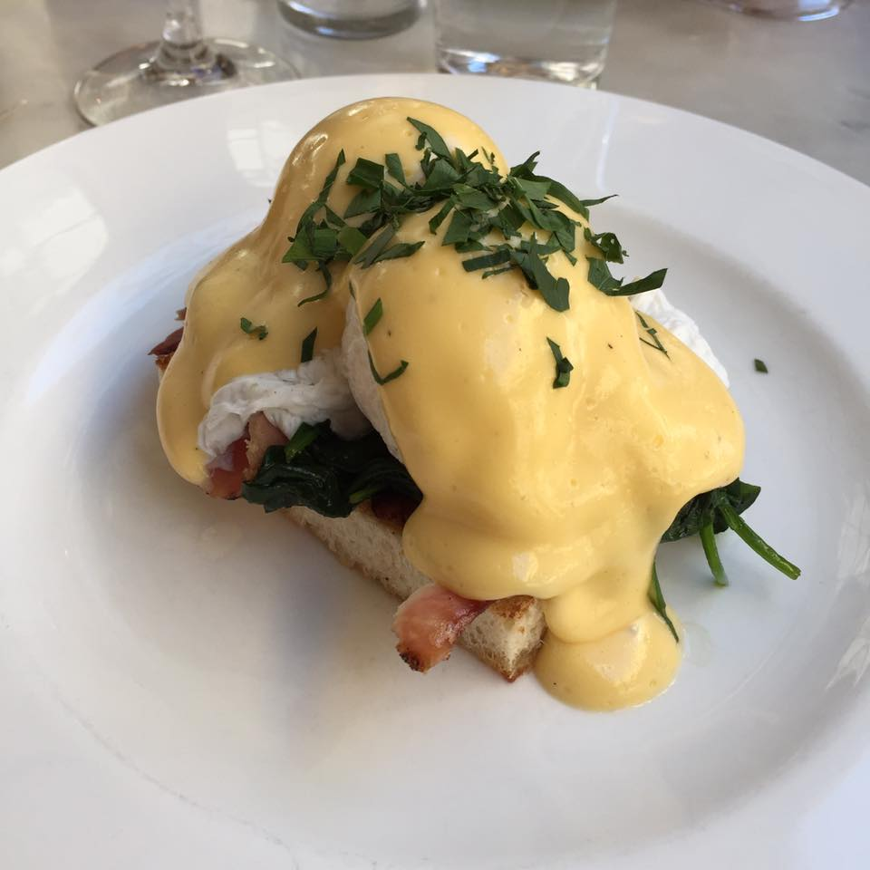

Webbplats med hjälp av GIT och Github
Skapar denna sida för att testa funktionaliteten Pages.
Vill man klona denna sida så gör man det via detta kommando
git clone https://github.com/FelGil/moment1.git
Givetvis måste man alltid ha mat med 😊 